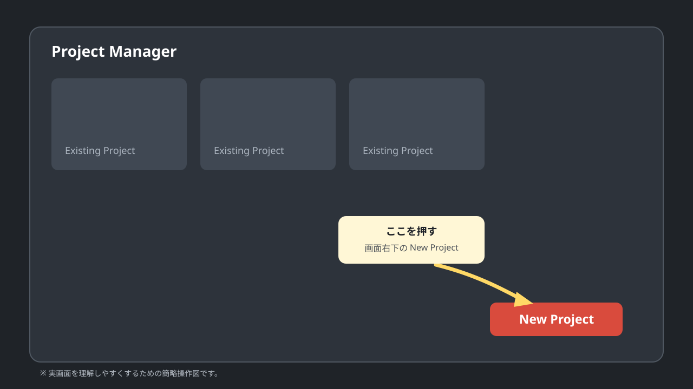
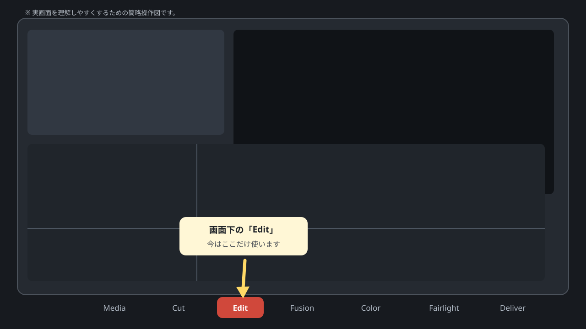
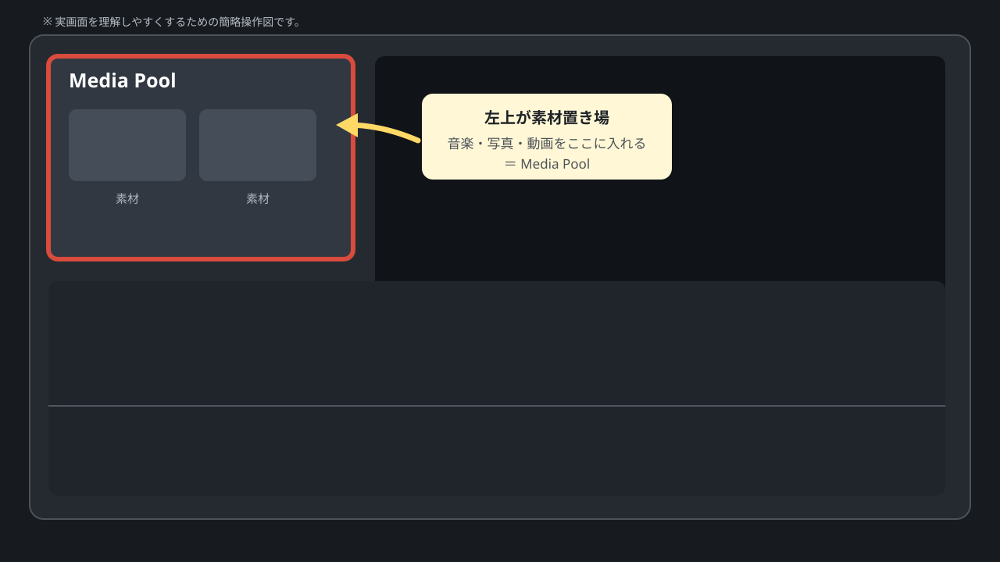

CHAPTER 01
起動したところから、音楽を取り込むまで
ここではまだ動画を作り込みません。「プロジェクトを作る → Edit画面を開く → StaRtをDaVinciに入れる」だけです。
このマニュアルのルール
- 一度にたくさん覚えない。
- 初めて出てくる言葉は、その場で意味を書く。
- 「どこを押すか」が分かる操作図を付ける。
- 会話で進んだところまで、このHTMLに追記していく。
STEP 1
新しいプロジェクトを作る
DaVinci Resolveを起動した直後の画面で、下のほうにある New Project を押します。

入力する名前
Wedding Opening
名前を入れたら Create を押します。
STEP 2
画面下の「Edit」を押す
プロジェクトが開くと、画面の一番下にページ切り替えがあります。今回はまず Edit だけ使います。

今は触らなくてOK： Fusion / Color / Fairlight / Deliver
STEP 3
「Media Pool」がどこかだけ確認する
Edit画面の左上に、写真・音楽・動画を置いておく場所があります。これを Media Pool（メディアプール） と呼びます。

難しい言葉を日本語にすると
Media Pool ＝ 素材置き場
この段階では、他の場所の名前は覚えなくて大丈夫です。
STEP 4
StaRtの音楽ファイルを入れる
- MacのFinderを開く。
- 手元にある「StaRt」の音楽ファイルを探す。
- そのファイルをマウスでつかむ。
- DaVinci左上のMedia Poolの空いているところへドラッグ。
- Media Poolに曲名が表示されたら成功。
この章のゴール
左上のMedia Poolに「StaRt」の音楽ファイルが見えている。
ここで一度止める
まだ音楽を下に置かない。写真も入れない。歌詞も作らない。
次は、Media Poolに入ったStaRtを「タイムライン」に置いて、再生するところから進めます。
今回出てきた言葉
- Project
- 今回作る動画の作業ファイル一式。
- Edit
- 写真・動画・音楽・文字を並べて編集するメイン画面。
- Media Pool
- 使う素材を置いておく場所。今は「素材置き場」でOK。